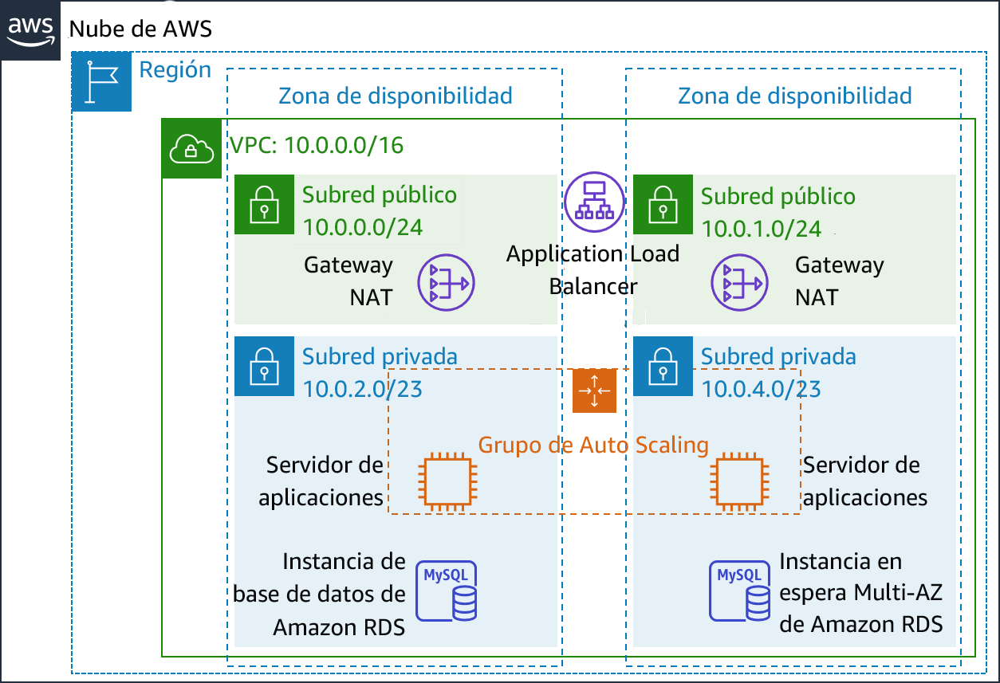
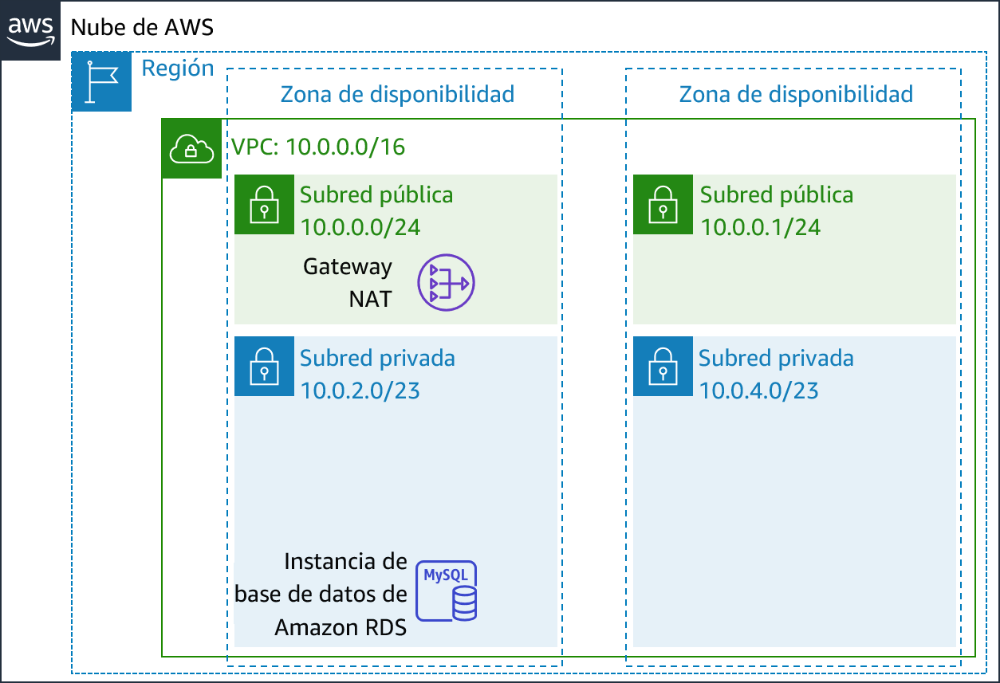
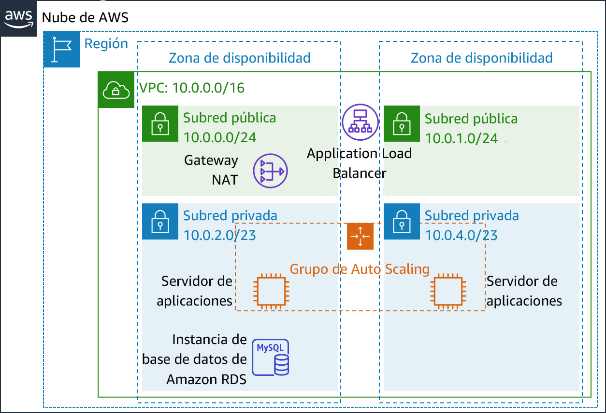
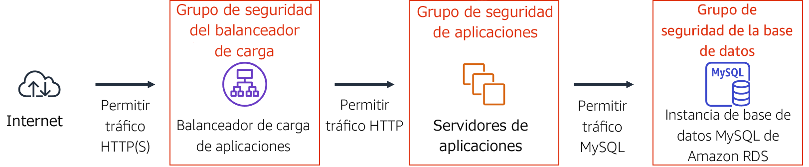
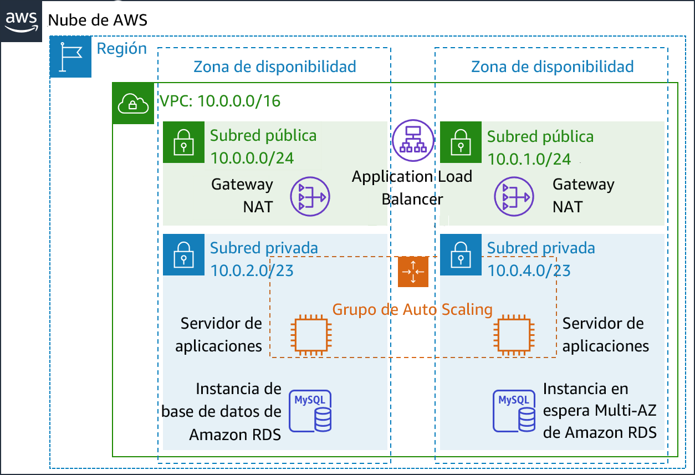

Módulo 9 - Laboratorio guiado: Creación de un entorno de alta disponibilidad
Información general y objetivos del laboratorio
Los sistemas empresariales cruciales deben implementarse como aplicaciones de disponibilidad alta, es decir, aplicaciones que permanecen operativas incluso si algunos componentes fallan. Para lograr una disponibilidad alta en Amazon Web Services (AWS), recomendamos que los servicios se ejecuten en varias zonas de disponibilidad.
Muchos servicios de AWS cuentan con disponibilidad alta intrínseca, como los balanceadores de carga. Muchos servicios de AWS se pueden configurar también para que tengan disponibilidad alta, por ejemplo, a través de la implementación de instancias Amazon Elastic Compute Cloud (Amazon EC2) en varias zonas de disponibilidad.
En este laboratorio, comenzará con una aplicación que se ejecuta en una única instancia de Amazon EC2 y, a continuación, deberá hacerla tener disponibilidad alta.
Después de completar este laboratorio, debería ser capaz de lo siguiente:
- Inspeccionar una nube virtual privada (VPC)
- Crear un balanceador de carga de aplicaciones
- Crear un grupo de Auto Scaling
- Probar la aplicación para ver si tiene disponibilidad alta
Cuando termine este laboratorio, la arquitectura se verá como en el siguiente ejemplo:

Duración
El tiempo estimado para completar el laboratorio es de 40 minutos.
Restricciones de los servicios de AWS
En este entorno de laboratorio, el acceso a los servicios y las acciones de los servicios de AWS puede restringirse a los que se necesiten para cumplir las instrucciones del laboratorio. Es posible que se produzcan errores si intenta acceder a otros servicios o hacer acciones que no sean las que se describen en este laboratorio.
Acceso a la consola de administración de AWS
En la parte superior de estas instrucciones, elija Start Lab (Iniciar laboratorio) y comience a trabajar en él.
Se abrirá el panel Start Lab (Iniciar laboratorio), donde se muestra el estado del laboratorio.
Sugerencia: Si necesita más tiempo para completar el laboratorio, vuelva a hacer clic en el botón Start Lab (Iniciar laboratorio) para reiniciar el temporizador del entorno.
Espere hasta que en el panel Start Lab (Iniciar Laboratorio) se muestre el mensaje Lab Status: ready (Estado del laboratorio: listo) y, luego, cierre el panel haciendo clic en la X.
En la parte superior de estas instrucciones, elija AWS.
Con esta acción, se abrirá la consola de administración de AWS en una nueva pestaña del navegador, y el sistema iniciará su sesión de forma automática.
Sugerencia: Si no se abre una nueva pestaña del navegador, por lo general habrá un aviso o un icono en la parte superior, el cual indicará que el navegador impide que el sitio abra ventanas emergentes. Haga clic en el aviso o el icono y elija Allow pop ups (Permitir ventanas emergentes).
Ubique la pestaña de la consola de administración de AWS de modo que aparezca junto con estas instrucciones. El método más óptimo sería tener ambas pestañas del navegador abiertas al mismo tiempo para que pueda seguir los pasos del laboratorio más fácilmente.
No cambie la región a menos que se le indique expresamente que debe hacerlo.
Tarea 1: Inspeccionar la VPC
Este laboratorio comienza con un entorno ya implementado mediante AWS CloudFormation, incluidos los siguientes elementos:
- Una VPC
- Subredes públicas y privadas en dos zonas de disponibilidad
- Una gateway de Internet (no se muestra) vinculada con las subredes públicas
- Una gateway de traducción de dirección de red (NAT) en una de las subredes públicas
- Una instancia de base de datos de Amazon Relational Database Service (Amazon RDS) en una de las subredes privadas

En esta tarea, analizará la configuración de la VPC que se creó para este laboratorio.
En la consola de administración de AWS, en el menú Services (Servicios), elija VPC.
En el panel de navegación izquierdo, en Filter by VPC (Filtrar por VPC), haga clic en el recuadro Select a VPC (Seleccionar una VPC) y seleccione Lab VPC.
Esta configuración limita la consola a mostrar solo los recursos vinculados con la Lab VPC.
En el panel de navegación izquierdo, elija Your VPCs (Sus VPC).
Aquí podrá acceder a la información sobre la Lab VPC que se creó para usted.
La columna CIDR tiene un valor de 10.0.0.0/16, lo que significa que en esta VPC se incluyen todas las direcciones IP que comienzan con 10.0.x.x.
En el panel de navegación izquierdo, elija Subnets (Subredes).
Aquí podrá acceder a la información sobre Public Subnet 1 (Subred pública 1):
- En la columna VPC, se muestra que esta subred existe dentro de Lab VPC.
- La columna CIDR IPv4 tiene un valor de 10.0.0.0/24, lo que significa que en esta subred se incluyen las 256 direcciones IP que hay entre 10.0.0.0 y 10.0.0.255. Cinco de estas direcciones están reservadas y son inutilizables.
- En la columna Availability Zone (Zona de disponibilidad), figura la zona de disponibilidad en la que está esta subred.
Para ver más detalles en la parte inferior de la página, seleccione Public Subnet 1 (Subred pública 1).
Sugerencia: Para ajustar el tamaño del panel de ventana inferior, puede arrastrar el divisor.
En la mitad inferior de la página, haga clic en la pestaña Route Table (Tabla de enrutamiento).
Allí podrá ver información sobre el direccionamiento de esta subred:
— Con la primera entrada se especifica que el tráfico destinado dentro del rango de direccionamiento entre dominios sin clases (CIDR) para la VPC (10.0.0.0/16) se direcciona dentro de la VPC (local).
— Con la segunda entrada se especifica que el tráfico destinado a Internet (0.0.0.0/0) se direcciona a la gateway de Internet (igw-). Con esta configuración la subred se convierte en una subred pública.
Haga clic en la pestaña Network ACL (ACL de red).
En esta pestaña, hay información sobre la lista de control de acceso de red (ACL de red) que está vinculada a la subred. Actualmente, las reglas permiten que todo el tráfico entre y salga de la subred, pero las reglas pueden restringirse aún más mediante el uso de grupos de seguridad.
En el panel de navegación izquierdo, elija Internet Gateways (Gateways de Internet).
Observe que ya hay una gateway de Internet vinculada con la Lab VPC.
- En el panel de navegación izquierdo, elija Security Groups (Grupos de seguridad).
- Seleccione Inventory DB (Base de datos del inventario).
Con este grupo de seguridad, se controla el tráfico que entra a la base de datos.
En la mitad inferior de la página, elija la pestaña Inbound rules (Reglas de entrada).
Con estas reglas, se permite el tráfico entrante de MySQL o Aurora (puerto 3306) desde cualquier parte de la VPC (10.0.0.0/16). Más tarde, modificará esta configuración para que solo se acepte el tráfico de los servidores de aplicaciones.
Elija la pestaña Outbound Rules (Reglas de salida).
De forma predeterminada, los grupos de seguridad permiten todo el tráfico saliente. Sin embargo, esta configuración se puede modificar según sea necesario.
Tarea 2: Crear un balanceador de carga de aplicaciones
Para crear una aplicación de disponibilidad alta, una práctica recomendada es lanzar recursos en varias zonas de disponibilidad. Las zonas de disponibilidad son centros de datos (o grupos de centros de datos) físicamente separados en la misma región. Si ejecuta las aplicaciones en varias zonas de disponibilidad, puede proporcionar más disponibilidad si un centro de datos experimentara un error.
Debido a que la aplicación se ejecuta en varios servidores de aplicaciones, necesitará una forma de distribuir el tráfico entre los servidores. Puede lograr esta meta mediante el uso de unbalanceador de carga. Con este balanceador de carga también se llevarán a cabo comprobaciones de estado de las instancias y solo se enviarán solicitudes a las instancias que estén en buen estado.

- En el menú Services (Servicios), elija EC2.
- En el panel de navegación izquierdo, elija Load Balancers (Balanceadores de carga). Es posible que deba desplazarse hacia abajo para encontrarlo.
- Elija Create load balancer (Crear balanceador de carga).
A continuación, se muestran varios tipos de balanceadores de carga. Lea las descripciones de cada tipo para comprender sus capacidades.
Para Application Load Balancer (Balanceador de carga de aplicaciones), elija Create (Crear).
En Name (Nombre), escriba
Inventory-LB.Desplácese hasta la sección Availability Zones (Zonas de disponibilidad) y en VPC seleccione Lab VPC.
A continuación, especificará qué subredes debe utilizar el balanceador de carga. Será un balanceador de carga público, así que seleccionará subredes públicas en ambos casos.
Elija la primera zona de disponibilidad y, a continuación, elija la subred pública que se muestra.
Elija la segunda zona de disponibilidad y, a continuación, elija la subred pública que se muestra.
Debería haber dos subredes seleccionadas: Public Subnet 1 (Subred pública 1) y Public Subnet 2 (Subred pública 2). (Si no es el caso, regrese e intente hacer la configuración otra vez).
Elija Next: Configure Security Settings (Siguiente: Definir la configuración de seguridad).
Se muestra una advertencia en que se recomienda utilizar HTTP segura (HTTPS) para más seguridad. Es un buen consejo, pero no es necesario para este laboratorio.
Elija Next: Configure Security Groups (Siguiente: Configurar grupos de seguridad).
A continuación, creará un grupo de seguridad que acepte todo el tráfico HTTP y HTTPS entrante.
Seleccione Create a new security group (Crear un nuevo grupo de seguridad) y configure lo siguiente:
- Security group name (Nombre del grupo de seguridad):
Inventory-LB - Description (Descripción):
Enable web access to load balancer (Habilitar el acceso web al balanceador de carga)
- Security group name (Nombre del grupo de seguridad):
Configure la regla que ya existe (que ya está en la página) de la siguiente manera:
- Type (Tipo): HTTP
- Source (Origen): Anywhere (Cualquiera)
Elija Add rule (Agregar regla) y configure lo siguiente:
- Type (Tipo): HTTPS
- Source (Origen): Anywhere (Cualquiera)
Con esta configuración se aceptarán todas las solicitudes HTTP y HTTPS entrantes.
Elija Next: Configure Routing (Siguiente: Configurar el direccionamiento).
Con los grupos de objetivos, se define dónde enviar el tráfico que entra en el balanceador de carga. El balanceador de carga de aplicaciones puede enviar tráfico a varios grupos de destino en función de la URL de la solicitud entrante: por ejemplo, enviar las solicitudes de aplicaciones móviles a un conjunto de servidores diferente de al que se envían otros tipos de solicitudes. La aplicación web utilizará solo un grupo de objetivos.
En Name (Nombre), escriba:
Inventory-App.Amplíe Advanced health check settings (Configuración avanzada de la comprobación de estado).
Con el balanceador de carga de aplicaciones se hacen comprobaciones de estado de manera automática en todas las instancias para velar por que respondan a las solicitudes. Se recomienda utilizar la configuración predeterminada, pero la acelerará un poco para utilizarla en este laboratorio.
Configure los siguientes valores:
- Healthy threshold (Umbral en buen estado):
2 - Interval (Intervalo):
10
Esta configuración implica que se hará una comprobación de estado cada 10 segundos y, si la instancia responde correctamente dos veces seguidas, se considerará que está en buen estado.
- Healthy threshold (Umbral en buen estado):
Elija Next: Register Targets (Siguiente: Registrar objetivos).
Los_objetivos_ son las instancias individuales que responden a las solicitudes del balanceador de carga. Todavía no tiene instancias de aplicación web, así que puede omitir este paso.
Elija Next: Review (Siguiente: Revisión).
Revise la configuración y, a continuación, elija Create (Crear) y después Close (Cerrar).
A continuación, el balanceador de carga se aprovisionará en segundo plano. No es necesario que espere mientras.
Tarea 3: Crear un grupo de Auto Scaling
Amazon EC2 Auto Scaling es un servicio diseñado para lanzar o terminar las instancias de Amazon EC2 automáticamente según políticas, programas y comprobaciones de estado definidos por el usuario. También distribuye automáticamente instancias a través de varias zonas de disponibilidad para hacer que las aplicaciones tengan disponibilidad alta.
En esta tarea, creará un grupo de Auto Scaling que implementa instancias EC2 en las subredes privadas, lo cual es una práctica recomendada de seguridad para la implementación de aplicaciones. No se puede acceder a las instancias de una subred privada desde Internet. En vez de eso, los usuarios envían solicitudes al balanceador de carga, que reenvía las solicitudes a instancias EC2 en las subredes privadas.

Crear una AMI para Auto Scaling
Creará una Imagen de Amazon Machine (AMI) del servidor web 1 que ya existe. Hacerlo le permitirá guardar el contenido del disco de arranque para que se puedan lanzar instancias nuevas con contenido idéntico.
En la consola de administración de AWS, en el menú Services (Servicios), haga clic en EC2.
En el panel de navegación izquierdo, haga clic en Instances (Instancias).
En primer lugar, confirmará que la instancia se está ejecutando.
Espere hasta que en Status Checks (Comprobaciones de estado) del servidor web 1 se muestre el mensaje 2/2 checks passed (2/2 comprobaciones aprobadas). Haga clic en Refresh (Actualizar) para actualizar.
A continuación, creará una AMI basada en esta instancia.
Seleccione Web Server 1 (Servidor web 1).
En el menú Actions (Acciones), haga clic en Image (Imagen) y en Create Image (Crear imagen) y, a continuación, configure lo siguiente:
- Image name (Nombre de la imagen):
Web Server AMI (AMI del servidor web) - Image description (Descripción de la imagen):
Lab AMI for Web Server (AMI de laboratorio para servidor web)
- Image name (Nombre de la imagen):
Haga clic en Create Image (Crear imagen).
En la pantalla de confirmación, se muestra la AMI ID (ID de la AMI) de la AMI nueva.
Haga clic en Close (Cerrar).
Utilizará esta AMI cuando más adelante lance el grupo de Auto Scaling en el laboratorio.
Crear una configuración de lanzamiento y un grupo de Auto Scaling
En primer lugar, creará una configuración de lanzamiento, con la cual se define el tipo de instancias que Amazon EC2 Auto Scaling debería lanzar. La interfaz es similar a cuando se lanza una instancia EC2. Sin embargo, en lugar de lanzarse una instancia, se almacena la configuración para su uso posterior.
En el panel de navegación izquierdo, elija Launch Configurations (Configuraciones de lanzamiento).
Elija Create launch configuration (Crear configuración de lanzamiento).
Configure lo siguiente:
Launch configuration name (Nombre de la configuración de lanzamiento):
Inventory-LCAmazon Machine image (AMI) (Imagen de Amazon Machine [AMI]): elija Web Server AMI (AMI del servidor web)
Instance type (Tipo de instancia):
- Elija Choose instance type (Elegir un tipo de instancia)
- Seleccione t3.micro
- Seleccione Choose (Elegir)
Nota: Si lanzó el laboratorio en la región us-east-1, seleccione el tipo de instancia t2.micro. Para encontrar la región, busque en la esquina superior derecha de la consola de Amazon EC2.
Nota: Si recibe el mensaje de error “Something went wrong. Please refresh and try again.” (Algo salió mal. Actualícelo e inténtelo de nuevo.), puede ignorarlo y continuar con el ejercicio.
Configuración adicional
- IAM instance profile (Perfil de instancia de IAM): seleccione Inventory-App-Role.
Monitoring (Monitoreo): seleccione Enable EC2 instance detailed monitoring within CloudWatch (Habilitar monitoreo detallado de instancia EC2 dentro de CloudWatch)
Ello permite que Auto Scaling reaccione rápidamente a los cambios en la utilización.
Amplíe Advanced details (Detalles avanzados). En User data (Datos de usuario), copie y pegue este script:
# Install Apache Web Server and PHPyum install -y httpd mysqlamazon-linux-extras install -y php7.2# Download Lab fileswget https://aws-tc-largeobjects.s3-us-west-2.amazonaws.com/ILT-TF-200-ACACAD-20-EN/mod9-guided/scripts/inventory-app.zipunzip inventory-app.zip -d /var/www/html/# Download and install the AWS SDK for PHPwget https://github.com/aws/aws-sdk-php/releases/download/3.62.3/aws.zipunzip aws -d /var/www/html# Turn on web serverchkconfig httpd onservice httpd start- En Security groups (Grupos de seguridad)
- Select an existing security group (Seleccionar un grupo de seguridad que ya existe): Inventory-App.
Recibirá esta advertencia: You will not be able to connect to the instance (No podrá conectarse a la instancia). Puede ignorarla, pues no se conectará a la instancia. Toda la configuración se hace a través del script de datos de usuario.
- En Key pair (log in) (Par de claves [inicio de sesión]):
- Seleccione Proceed without a key pair (Continuar sin un par de claves).
- Seleccione I acknowledge that... (Confirmo que...)
- Elija Create launch configuration (Crear configuración de lanzamiento).
Con la configuración de lanzamiento se definió qué lanzar, pero con el grupo de Auto Scaling se define a dónde lanzar los recursos.
- En la tabla Launch configurations (Lanzar configuraciones), seleccione Inventory-LC.
- En el botón Actions (Acciones), elija Create Auto Scaling group (Crear grupo de Auto Scaling).
- Escriba el nombre del grupo de Auto Scaling:
- Name (Nombre):
Inventory-ASG(ASG significa grupo de Auto Scaling).
Elija Next (Siguiente).
En la página Network (Red), configure lo siguiente:
- VPC: Lab VPC
- Subnet (Subred): seleccione Private Subnet 1 (Subred privada 1) y Private Subnet 2 (Subred privada 2).
Puede ignorar la advertencia: No public IP addresses will be assigned (No se asignarán direcciones IP públicas). Las instancias EC2 se lanzarán en una subred privada, así que no requieren direcciones IP públicas.
Ello lanzará las instancias EC2 en subredes privadas en ambas zonas de disponibilidad.
Elija Next (Siguiente).
En Load balancing (Balanceo de carga):
- Seleccione Enable load balancing (Habilitar el balanceo de carga)
- Elija Application Load Balancer (Balanceador de carga de aplicaciones o ELB) o Network Load Balancer (Balanceador de carga de red)
- Elija un grupo de objetivos para el balanceador de carga: Inventory-App
Con esta configuración se indica al grupo de Auto Scaling que registre las instancias EC2 nuevas como parte del grupo de objetivos Inventory-App que creó. Con el balanceador de carga se enviará tráfico a las instancias que están en ese grupo de objetivos.
En Health checks (Comprobaciones de estado):
- Seleccione ELB
- Health Check grace period (Periodo de gracia para la comprobación de estado): 90
- En Additional settings (Configuración adicional):
- seleccione Enable group metrics collection within CloudWatch (Activar la recopilación de métricas de grupo en CloudWatch)
Elija Next (Siguiente).
En Group Size (Tamaño de grupo), configure lo siguiente:
- Desired capacity (Capacidad deseada): 2
- Minimum capacity (Capacidad mínima): 2
- Maximum capacity (Capacidad máxima): 2
En Scaling policies (Políticas de escalado), elija None (Ninguna).
Para este laboratorio, mantendrá dos instancias en todo momento para velar por una disponibilidad alta. Si se espera que la aplicación reciba cargas variables de tráfico, también puede crear políticas de escalado, las cuales definan cuándo lanzar o terminar instancias. Sin embargo, no es necesario crear políticas de escalado para la aplicación de inventario en este laboratorio.
Elija Next (Siguiente).
En la página Add notifications (Agregar notificaciones) , elija Next (Siguiente). No es necesario definir estos ajustes.
En la página Add tags (Agregar etiquetas), elija Add tag (Agregar etiqueta).
- Key (Clave):
Name (Nombre) - Value (Valor):
Inventory-App - Seleccione Next (Siguiente)
Con estos ajustes se etiquetará al grupo de Auto Scaling con un Nombre, que aparecerá también en las instancias EC2 lanzadas por el grupo de Auto Scaling. Puede utilizar etiquetas para determinar qué instancias Amazon EC2 están vinculadas con cada aplicación. También puede agregar etiquetas como Cost Center (Centro de costos) para asignar los costos de la aplicación en los archivos de facturación.
- Key (Clave):
En la página Review (Revisar):
- Elija Create Auto Scaling group (Crear grupo de Auto Scaling).
Aparecerá en la consola Inventory-ASG:

De la revisión se desprende lo siguiente:
- El grupo actualmente no tiene instancias, pero el icono de información indica que se están iniciando instancias. (Para obtener más información, pase el cursor sobre el icono).
- La cantidad Deseada es 2 instancias. Amazon EC2 Auto Scaling intentará lanzar dos instancias para alcanzar la cantidad deseada
- Los valores Mínimos y Máximos también se establecen en 2 instancias. Amazon EC2 Auto Scaling intentará dar siempre dos instancias, incluso si se produce un error.
Pronto la aplicación se ejecutará en dos zonas de disponibilidad, y Amazon EC2 Auto Scaling mantendrá esa configuración, aunque haya un error en una instancia o zona de disponibilidad.
Después de un minuto, elija Refresh (Refrescar) para actualizar la pantalla. Debería mostrar que se están ejecutando 2 instancias.
Tarea 4: Actualizar los grupos de seguridad
La aplicación que implementó es una arquitectura de tres niveles. A continuación, configurará los grupos de seguridad para aplicar estos niveles:

Grupo de seguridad del balanceador de carga
Ya configuró el grupo de seguridad del balanceador de carga cuando creó el balanceador de carga. Acepta todo el tráfico HTTP y HTTPS entrante.
El balanceador de carga ha sido configurado para reenviar las solicitudes entrantes a un grupo de objetivos. Cuando lanza nuevas instancias, Auto Scaling agrega automáticamente esas instancias al grupo de objetivos.
Grupo de seguridad de la aplicación
El grupo de seguridad de la aplicación se dio como parte de la configuración del laboratorio. A continuación, lo configurará para que solo acepte tráfico entrante del balanceador de carga.
- En el panel de navegación izquierdo, elija Security Groups (Grupos de seguridad).
- Seleccione Inventory-App.
- En la mitad inferior de la página, elija la pestaña Inbound rules (Reglas de entrada).
Actualmente, el grupo de seguridad está vacío. A continuación, agregará una regla para aceptar el tráfico HTTP entrante del balanceador de carga. No es necesario configurar el tráfico HTTPS, pues el balanceador de carga se configuró para reenviar solicitudes HTTPS a través de HTTP. Esta práctica descarga la seguridad al balanceador de carga, lo que reduce la cantidad de trabajo que requieren los servidores de aplicaciones individuales.
- Elija Edit inbound rules (Editar reglas de entrada).
- En la página Edit inbound rules (Editar reglas de entrada), elija Add rule (Agregar regla) y defina estas opciones:
Type (Tipo): HTTP
Source (Origen):
- Haga clic en el recuadro de búsqueda que está al lado de Custom (Personalizado)
- Eliminar el contenido actual
- Escriba
sg - En la lista que aparece, seleccione Inventario-LB
Description (Descripción):
tráfico del balanceador de cargaElija Save rules (Guardar reglas)
Los servidores de aplicaciones ya pueden recibir tráfico del balanceador de carga, que incluye las comprobaciones de estado que el balanceador de carga hace de forma automática.
Grupo de seguridad de base de datos
A continuación, debe configurar el grupo de seguridad de la base de datos para que solo acepte el tráfico entrante de los servidores de aplicaciones.
- Seleccione Inventory-DB (y asegúrese de que no se hayan seleccionado otros grupos de seguridad).
La regla que ya existe permite el tráfico en el puerto 3306 (utilizado por MySQL) desde cualquier dirección IP dentro de la VPC. Es una buena regla, pero la seguridad se puede restringir aún más.
- En la ficha Inbound rules (Reglas entrantes), elija Edit inbound rules (Editar reglas de entrada) y configure estas opciones:
- Haga clic en el recuadro de búsqueda que está al lado de Custom (Personalizado)
- Eliminar el contenido actual
- Type (Tipo)
sg - Seleccione Inventory-App de la lista que se muestra
- Description (Descripción):
tráfico de los servidores de aplicaciones - Elija Save rules (Guardar reglas)
Ya configuró la seguridad de tres niveles. Cada elemento de nivel solo acepta tráfico del nivel anterior.
Además, el uso de subredes privadas significa que tiene dos barreras de seguridad entre Internet y los recursos de aplicaciones. Esta arquitectura sigue la práctica recomendada de aplicar varias capas de seguridad.
Tarea 5: Probar la aplicación
La aplicación ya está lista para probarla.
Para esta tarea, deberá confirmar que la aplicación web esté en ejecución y comprobar que tiene disponibilidad alta.
- En el panel de navegación izquierdo, elija Target Groups (Grupos de objetivos).
Se mostrará el grupo de instancias Inventory-App.
- En la mitad inferior de la página, elija la pestaña Targets (Objetivos).
En esta pestaña deberían aparecer dos objetivos registrados. En la columna Status (Estado) se muestran los resultados de la comprobación de estado del balanceador de carga que se hace en las instancias.
- En la zona superior derecha, de vez en cuando elija Refresh (Refrescar) hasta que el Status (Estado) de ambas instancias figure como en buen estado.
Si el estado no cambia eventualmente a en buen estado, pida ayuda a su instructor para diagnosticar la configuración. Pase el cursor sobre el icono de la columna Status (Estado) para acceder a más información sobre el estado.
Probará la aplicación conectándose al balanceador de carga, que luego enviará su solicitud a una de las instancias EC2. Antes tendrá que recuperar el nombre del sistema de nombres de dominio (DNS) del balanceador de carga.
- En el panel de navegación izquierdo, elija Load Balancers (Balanceadores de carga).
- En la pestaña Description (Descripción), situada en la mitad inferior de la ventana, copie el nombre de DNS al portapapeles.
Debe parecerse al siguiente: inventory-LB-xxxx.elb.amazonaws.com.
- Abra una nueva pestaña en el navegador web, pegue el nombre de DNS del portapapeles y presione INTRO.
El balanceador de carga envió su solicitud a una de las instancias EC2. El ID de la instancia y la zona de disponibilidad se muestran en la parte inferior de la página web.
Vuelva a cargar la página en el navegador web. Debería constatar que el ID de la instancia y la zona de disponibilidad a veces cambian entre las dos instancias.
El flujo de información, cuando se muestra esta aplicación web, es el siguiente:
- Envió la solicitud al balanceador de carga, que reside en las subredes públicas que están conectadas a Internet.
- El balanceador de carga eligió una de las instancias EC2 que residen en las subredes privadas y le envió la solicitud.
- Después la instancia EC2 devolvió la página web al balanceador de carga, que la devolvió al navegador web.
Tarea 6: Comprobar la disponibilidad alta
La aplicación se configuró para que tuviera disponibilidad alta. Puede comprobar la disponibilidad alta de la aplicación terminando una de las instancias EC2.
- Vuelva a la pestaña de la consola de Amazon EC2 del navegador web (pero no cierre la pestaña de la aplicación web, ya que pronto deberá volver a ella).
- En el panel de navegación izquierdo, elija Instances (Instancias).
A continuación, debe terminar una de las instancias de aplicación web para simular un error.
- Seleccione una de las instancias Inventory-App (no importa cuál seleccione).
- Elija Actions (Acciones) y, a continuación, Instance State > Terminate (Estado de instancia > Terminar).
- Elija Yes, Terminate (Sí, terminar).
En poco tiempo, en las comprobaciones de estado del balanceador de carga se constatará que la instancia no responde. Con el balanceador de carga, se direccionarán automáticamente todas las solicitudes a la instancia restante.
- Regrese a la pestaña de la aplicación web del navegador web y vuelva a cargar la página varias veces.
Debería constatar que la zona de disponibilidad que se muestra en la parte inferior de la página permanece igual. Aunque se produjo un error en una instancia, la aplicación permanece disponible.
Después de unos minutos, Amazon EC2 Auto Scaling también notará el fallo de la instancia. Fue configurado para mantener dos instancias en ejecución, así que Amazon EC2 Auto Scaling lanzará automáticamente una instancia de reemplazo.
- Vuelva a la pestaña de la consola de Amazon EC2 del navegador web. En la zona superior derecha, seleccione “Refresh (Actualizar)” cada 30 segundos hasta que aparezca una nueva instancia EC2.
Después de unos minutos, la comprobación de estado de la instancia nueva debería indicar que está en buen estado. El balanceador de carga seguirá enviando el tráfico entre dos zonas de disponibilidad. Puede volver a cargar la pestaña de la aplicación web para constatarlo.
Esta tarea demuestra que la aplicación ya tiene disponibilidad alta.
Tarea opcional 1: Hacer que la base de datos tenga disponibilidad alta
Esta tarea es opcional. Puede trabajar en esta tarea si le queda tiempo de laboratorio.
La arquitectura de la aplicación ya tiene disponibilidad alta. Sin embargo, la base de datos de Amazon RDS opera desde una sola instancia de base de datos.
En esta tarea opcional, hará que la base de datos tenga disponibilidad alta configurándola para que se ejecute en varias zonas de disponibilidad (es decir, con una implementación Multi-AZ).

- En el menú Services (Servicios), elija RDS.
- En el panel de navegación izquierdo, elija Databases (Base de datos).
- Elija inventory-db.
No dude en explorar la información sobre la base de datos.
- Elija Modify (Modificar).
- Para la implementación Multi-AZ, seleccione Yes (Sí).
Solo tiene que hacer eso para convertir la base de datos de modo tal que se ejecute en varios centros de datos (zonas de disponibilidad).
Esta opción no significa que la base de datos se distribuye entre varias instancias. En vez de eso, una instancia es la instancia principal, que se encarga de todas las solicitudes. Otra instancia se lanzará como la instancia en espera, que toma el relevo si la instancia principal falla. La aplicación sigue utilizando el mismo nombre de DNS para la base de datos. Sin embargo, las conexiones se redirigirán automáticamente al servidor de base de datos activo actualmente.
Puede escalar una instancia EC2 cambiando atributos y también puede escalar una base de datos de RDS de esta manera. A continuación, escalará la base de datos.
- Para DB instance class (Clase de instancia de base de datos), seleccione db.t3.small.
Hacer esta acción duplica el tamaño de la instancia.
- Para Allocated storage (Almacenamiento asignado), escriba:
10
Hacer esta acción duplica la cantidad de espacio que se asigna a la base de datos.
No dude en explorar las otras opciones de la página, pero no cambie los valores.
- En la parte inferior de la página, elija Continue (Continuar).
El rendimiento de la base de datos se verá afectado por estos cambios. Por tanto, estos cambios se pueden programar para un intervalo de mantenimiento definido, o bien se pueden ejecutar inmediatamente.
- En la sección Scheduling of Modifications (Programación de modificaciones), seleccione Apply immediately (Aplicar inmediatamente).
- Elija Modify DB Instance (Modificar instancia de base de datos).
La base de datos entra en un estado de modificación mientras se aplican los cambios. No es necesario esperar a que termine.
Tarea opcional 2: Establecer una gateway de NAT de disponibilidad alta
Esta tarea es opcional. Puede trabajar en esta tarea si le queda tiempo de laboratorio.
Los servidores de aplicaciones se ejecutan en una subred privada. Si los servidores deben acceder a Internet (por ejemplo, para descargar datos), las solicitudes deben redirigirse a través de una puerta de gateway de conversión de las direcciones de red (NAT). (La gateway de NAT debe estar ubicada en una subred pública).
La arquitectura actual solo tiene una gateway de NAT en Public Subnet 1 (Subred pública 1). Por tanto, si falla la zona de disponibilidad 1, los servidores de aplicaciones no podrán comunicarse con Internet.
En esta tarea opcional, hará que la gateway de NAT tenga disponibilidad alta lanzando otra gateway de NAT en la otra zona de disponibilidad. La arquitectura resultante tendrá disponibilidad alta:

- En el menú Services (Servicios), elija VPC.
- En el panel de navegación izquierdo, haga clic en NAT Gateways (Gateways NAT).
Aparece la gateway de NAT que ya existe. A continuación, creará una gateway de NAT para la otra zona de disponibilidad.
Elija Create NAT gateway (Crear gateway de NAT) y defina los siguientes ajustes:
- Subnet (Subred): PublicSubnet2 (seleccione esta opción de la lista)
Los detalles de lasubred están al principio de estas instrucciones. Elija Details (Detalles)y, a la derecha de AWS, elija Show (Mostrar). Tenga en cuenta los nombres de PublicSubnet2 y NATGateway1.
- Elija Allocate Elastic IP (Asignar IP elástica).
- Elija Create NAT gateway (Crear gateway de NAT).
- Elija Edit route tables (Editar tablas de enrutamiento).
A continuación, creará una nueva tabla de enrutamiento para Private Subnet 2. Esta tabla de enrutamiento redirigirá el tráfico a la nueva gateway de NAT.
Elija Create route table (Crear tabla de enrutamiento) y defina los siguientes ajustes:
- Name tag (Etiqueta de nombre):
Private Route Table 2 - VPC: Lab VPC
- Elija Create (Crear) y, a continuación, Close (Cerrar).
- Name tag (Etiqueta de nombre):
Seleccione Private Route Table 2 (Tabla de enrutamiento privada 2) y confirme que es la única tabla de enrutamiento seleccionada.
Elija la pestaña Routes (Rutas).
Actualmente, una ruta dirige todo el tráfico locally.
A continuación, agregará una ruta para enviar el tráfico vinculado a Internet a través de la gateway de NAT nueva.Elija Edit routes (Editar rutas) y, a continuación, defina los siguientes ajustes:
- Elija Add route (Agregar ruta).
- Destination (Destino):
0.0.0.0/0
- Objetivo: seleccione la gateway de NAT_y, a continuación, seleccione la entrada _nat- que no es la entrada de NATGateway1, que está debajo del botón Details (Detalles) situado encima de estas instrucciones.
- Elija Save routes (Guardar rutas) y, a continuación, Close (Cerrar).
La gateway de NAT que aparece bajo el botón Details (Detalles), que está encima de estas instrucciones, es para Public Subnet 1 (Subred pública 1). Está configurando la tabla de enrutamiento para utilizar la otra gateway de NAT.
Elija la pestaña Subnet Associations (Asociaciones de subredes).
Elija Edit subnet associations (Editar asociaciones de subredes).
Seleccione Private Subnet 2 (Subred privada 2).
Elija Save (Guardar).
Con esta acción, el tráfico vinculado a Internet proveniente de la Subred privada 2 se comenzará a enviar a la gateway de NAT que está en la misma zona de disponibilidad.
Las gateways de NAT ya tienen disponibilidad alta. Un error en una zona de disponibilidad no afectará al tráfico de la otra zona de disponibilidad.
Envío de su trabajo
En la parte superior de estas instrucciones, elija Submit (Enviar) para registrar su progreso y, cuando se le indique, elija Yes (Sí).
Si los resultados no se muestran después de algunos minutos, vuelva a la parte superior de estas instrucciones y elija Grades (Resultados).
Sugerencia: Puede enviar su trabajo varias veces. Después de realizar las modificaciones pertinentes, vuelva a elegir Submit (Enviar). Su último envío es el que se registrará para este laboratorio.
Para encontrar comentarios detallados sobre su trabajo, elija Details (Detalles) seguido de View Submission Report (Ver informe de envío).
Fin del laboratorio
¡Felicitaciones! Ha completado el laboratorio.
Elija End Lab (Finalizar laboratorio) en la parte superior de esta página y, a continuación, seleccione Yes (Sí) para confirmar que desea finalizar el laboratorio.
Un panel presentará el mensaje DELETE has been initiated… You may close this message box now (Se ha iniciado la ELIMINACIÓN… Ya puede cerrar este cuadro de mensaje).
Seleccione la X de la esquina superior derecha para cerrar el panel.
©2020 Amazon Web Services, Inc. y sus empresas afiliadas. Todos los derechos reservados. Este contenido no puede reproducirse ni redistribuirse, total ni parcialmente, sin el permiso previo por escrito de Amazon Web Services, Inc. Queda prohibida la copia, el préstamo y la venta de carácter comercial.